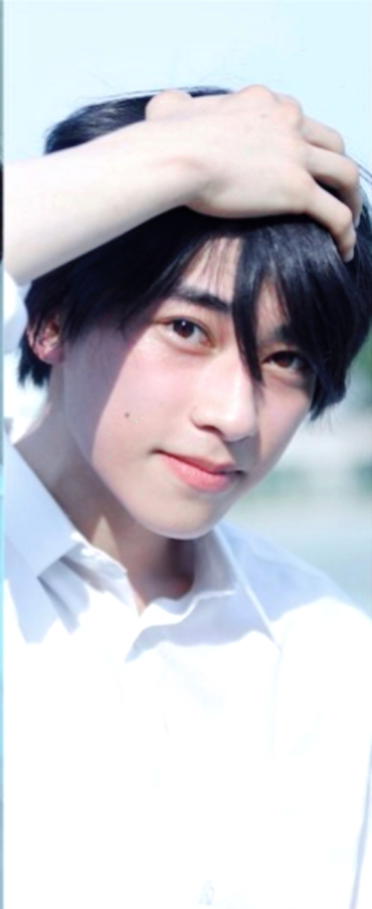
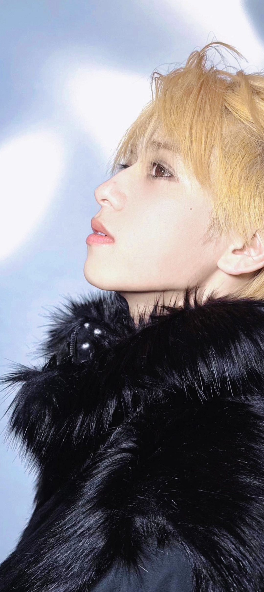
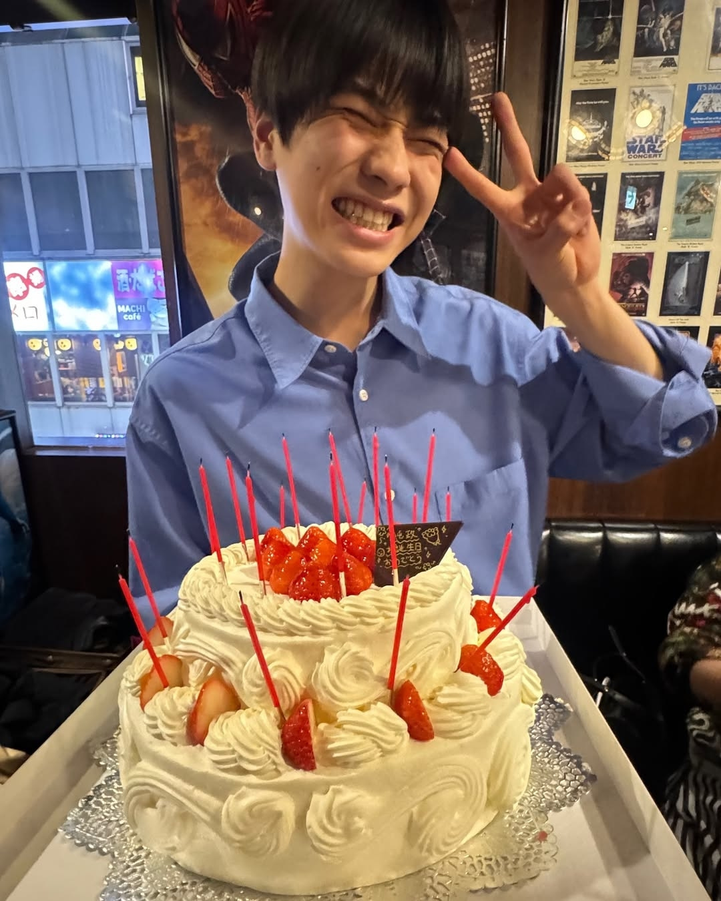
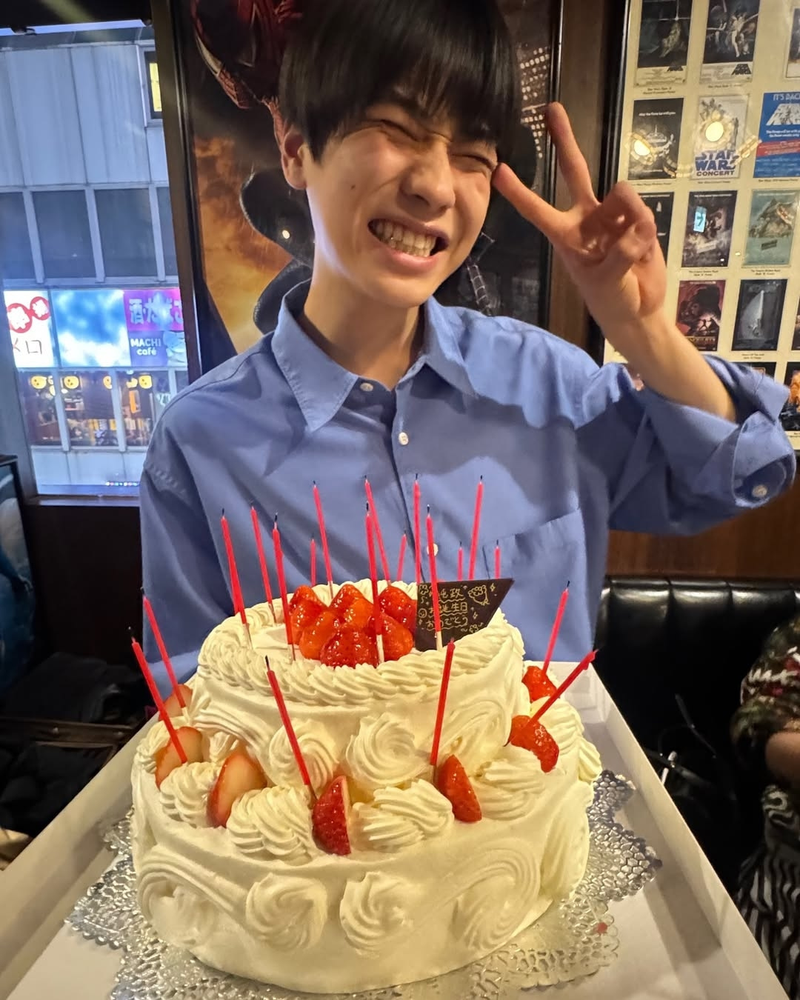

成长相册
宝宝猪我们喜欢你
人类太坏了怎么丢给一只猪修罗场剧本？
小宝宝时期可遇不可求，请您一定要珍惜哦。猪猪长大的速度比两脚兽想象的快——多——了——！！
吾家有猪初长成
猪猪让世界变成了彩色的~但是不打扮的话，他就会自顾自地爱上黑色上衣黑色裤子和黑色皮鞋！所以有时需要您进行一定的强制爱才能解锁彩色猪猪哦~
猪妹一猪美一降临
他有透明的心灵，和会流泪的眼睛
🐷的漂亮永远现在进行时~
如果把猪猪丢下，他只会无助地变成一小团🥺 所以不要这样对猪猪哦，偶尔逗一下也要好好哄回来
毛茸茸的灯光和毛茸茸的🐷
爱猪如养花
 
贪恋你的过去又挂念你的未来，猪公主说所以要记得珍惜猪猪的每一秒哦~👸
 

亲爱的你呀新年快乐，即将到来的21岁要天天开心~